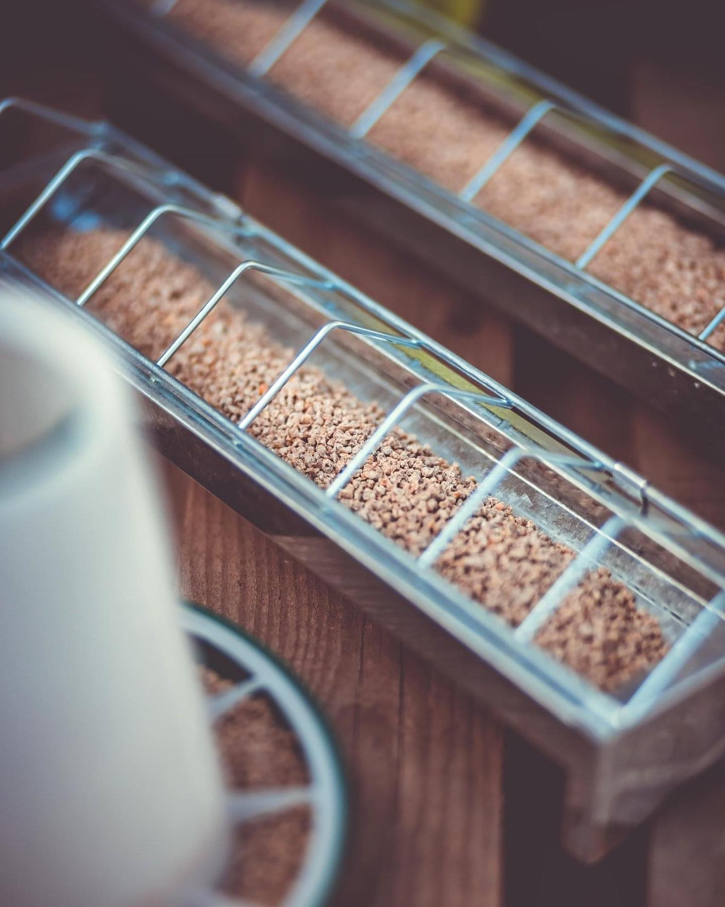

Hydina podľa @farmamix.sk — Normy Jedál
Žľabové krmítka sa vyrábajú v rôznych veľkostiach, typoch a materiáloch ... jedným z nich je aj krmítko z pozinkovaného plechu s drôteným vekom 🐥 #farmamix #farma #krmitka #hydina #holub #kura #broiler #chovatel #farmar #bio #nature